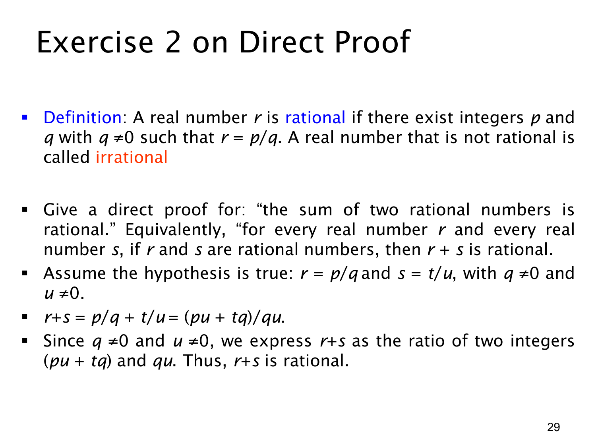

L1.3 · 第 29 页讲解原文
查看这一页课件

直接证明练习：有理数的和仍是有理数
有理数（rational number）的定义是：一个实数 r 若能写成 p/q，其中 p,q 为整数且 q=0，则 r 是有理数；不能这样表示的实数称为无理数（irrational number）。本页要证明：对任意实数 r,s，若两者都是有理数，则 r+s 也是有理数。
按直接证明，先假设 r 和 s 都是有理数。由定义，存在整数 p,q,t,u，其中 q=0、u=0，使
r=qp,s=ut.
通分后得到
r+s=qp+ut=qupu+tq.
分子 pu+tq 是整数，分母 qu 也是整数；并且两个非零整数的乘积 qu=0。所以右边符合有理数定义，r+s 为有理数。
这里有两个条件都要明确：分子、分母是整数，以及分母不为零。仅展示分式形式而不核对这两个条件，证明就不完整。与完全平方数的乘积一题一样，证明的实际工作是从前件提供的见证 p,q,t,u，构造出后件所需的新见证 pu+tq 与 qu。